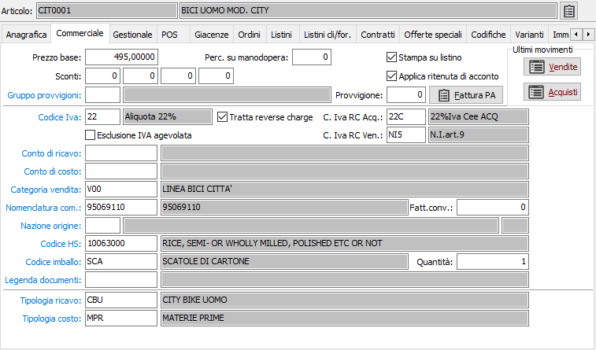
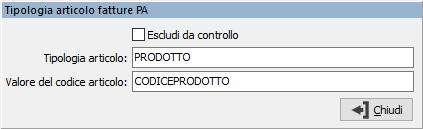

Commerciale

PREZZO BASE: campo numerico per il prezzo di vendita dell'articolo, che viene proposto automaticamente in fase di immissione documento quando viene richiamato quell'articolo di magazzino.
PERCENTUALI SU MANODOPERA: Indicare la percentuale di incidenza della manodopera sul valore del prodotto; questo valore, se presente, viene proposto sui documenti ed è visibile solo se attiva la gestione IVA ristrutturazioni a livello di configurazione.
STAMPA SUL LISTINO: definisce se l'articolo deve comparire nella stampa del listino (casella con segno di spunta).
APPLICA RITENUTA DI ACCONTO: utilizzato per stabilire se l'articolo concorre o meno al calcolo dell'imponibile RdA (casella con segno di spunta). L'attuale normativa prevede infatti che vengano assoggettate a RdA solo le prestazioni rese a seguito di contratti di appalto (e non gli articoli venduti nell'esercizio della prestazione).
SCONTI: in base a quanto inserito in configurazione, possono comparire fino a 5 sconti. Inserire tali percentuali di sconto/maggiorazione in questi campi. Il segno è determinato da quello che si è inserito in configurazione sul campo "tipo trattamento sconti". In fase di immissione ordine, Ddt o fattura immediata, le percentuali sono proposte automaticamente come sconti/maggiorazioni di rigo.
GRUPPO PROVVIGIONE: codice alfanumerico di 3 caratteri, presente nella tabella Gruppi provvigioni. Sul campo sono attive le funzioni di ricerca (F9) e manutenzione (CTRL+W) della tabella stessa.
PROVVIGIONE: supposto che l’installazione preveda la gestione provvigioni su articoli standard, inserire la percentuale di provvigione riconosciuta sull'articolo. In fase di immissione ordine, Ddt o fattura immediata, la percentuale viene proposta automaticamente e può essere modificata.
CODICE IVA: codice alfanumerico di 3 caratteri, presente nella tabella Aliquote Iva, che identifica l’aliquota Iva a cui è ordinariamente soggetto l’articolo attivo. Sul campo sono attive le funzioni di ricerca e manutenzione della tabella stessa.
ESCLUSIONE IVA AGEVOLATA: indica che il prodotto non può essere assoggettato ad agevolazioni Iva previste per cantieri di ristrutturazione (casella con segno di spunta).
TRATTA REVERSE CHARGE: attivando questo campo vengono proposti i due campi successivi "Codice Iva reverse charge ACQ" e "Codice Iva reverse charge VEN" in base ai relativi codici presenti sul codice Iva principale; i due campi sono obbligatori se il campo "Tratta reverse charge" è spuntato.
C.IVA RC ACQ.: il campo, valido se attiva la spunta su "Tratta reverse charge" viene proposto come codice Iva di rigo nei documenti del ciclo passivo (RDO, Ordini, Ddt, Fatture, Autofatture).
C.IVA RC VEN.: il campo, valido se attiva la spunta su "Tratta reverse charge" viene proposto come codice Iva di rigo nei documenti del ciclo attivo (Offerte, Ordini, Ddt, Fatture, Vendita al dettaglio) solo per i clienti su cui è attiva la gestione “Vendita in reverse charge”.
CONTO DI RICAVO: codice alfanumerico di 8 caratteri presente nella tabella sottoconti. È il sottoconto attribuito al prodotto da utilizzare a livello di contabilizzazione delle fatture di vendita. Sul campo sono attive le funzioni di ricerca e manutenzione della tabella stessa.
CONTO DI COSTO: codice alfanumerico di 8 caratteri presente nella tabella sottoconti. È il sottoconto attribuito al prodotto da utilizzare a livello di contabilizzazione delle fatture di acquisto. Sul campo sono attive le funzioni di ricerca e manutenzione della tabella stessa.
CATEGORIA DI VENDITA: codice alfanumerico di 3 caratteri presente in tabella Categorie di vendita. Individua il codice della categoria attribuita all’articolo, che viene utilizzato in fase di costruzione della tabella aliquote provvigioni, nella gestione dei listini speciali e dei contratti. Sul campo sono attive le funzioni di ricerca e manutenzione della tabella stessa.
NOMENCLATURA COMBINATA: indicare il codice, presente nella tabella nomenclature combinate, della tariffa doganale relativa al tipo di articolo attivo. L’informazione è utile se è attivo il modulo aggiuntivo “Modelli Intra”.
FATTORE DI CONVERSIONE: può contenere il fattore di conversione, rispetto all'unità di misura primaria del prodotto, per calcolare la massa netta in unità di misura supplementare. Il valore viene utilizzato in base a quanto previsto nella tabella nomenclature combinate.
Nazione origine: indica il codice della nazione di origine del prodotto, il campo può essere lasciato vuoto; il dato, se presente, viene riportato sulle righe di Ddt e Fatture ed utilizzato per la gestione del modello Intra. Sul campo sono attive le funzioni di ricerca e manutenzione della tabella stessa.
CODICE HS: indicare l'eventuale codice della tariffa secondo le codifiche previste per HS Code; in fase di stampa fattura, se previsto dalla causale, sarà stampato in calce alla fattura il riepilogo per HS Code. Sul campo sono attive le funzioni di ricerca e manutenzione della tabella stessa.
CODICE IMBALLO: codice alfanumerico di 3 caratteri presente in tabella Imballi. Sul campo sono attive le funzioni di ricerca e manutenzione della tabella stessa.
QUANTITÀ IMBALLO: indica il numero dei pezzi, dell’articolo trattato, che possono essere contenuti nell’imballo specificato; questo campo ha un valore significativo solo se è specificato un imballo.
LEGENDA DOCUMENTI: codice alfanumerico di 3 caratteri presente in tabella Legenda documenti di trasporto. Attualmente non gestito. Sul campo sono attive le funzioni di ricerca e manutenzione della tabella stessa.
TIPOLOGIA DI RICAVO: codice alfanumerico di 3 caratteri presente in tabella Tipologie di ricavo. È il tipo di ricavo attribuito al prodotto per la determinazione del conto di ricavo da utilizzare a livello di contabilizzazione delle fatture di vendita. Sul campo sono attive le funzioni di ricerca e manutenzione della tabella stessa.
TIPOLOGIA DI COSTO: codice alfanumerico di 3 caratteri presente in tabella Tipologie di ricavo. È il tipo di costo attribuito al prodotto per la determinazione del conto di ricavo da utilizzare a livello di contabilizzazione delle fatture di acquisto. Sul campo sono attive le funzioni di ricerca e manutenzione della tabella stessa.
Se presente OS1BoxFatture sarà presente il pulsante che consente di accedere alla finestra di gestione dei dati relativi alla tipologia del prodotto; da questa finestra è possibile escludere l'articolo dal controllo sulla presenza di questi dati o impostare i valori corretti.
